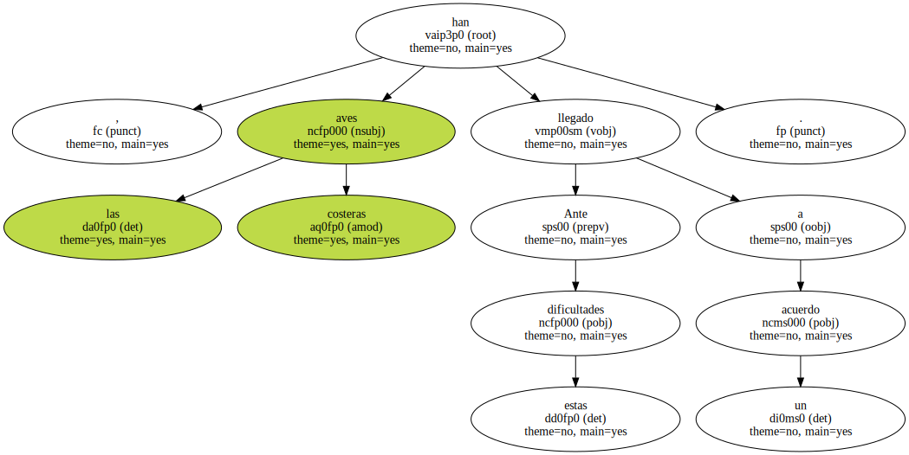
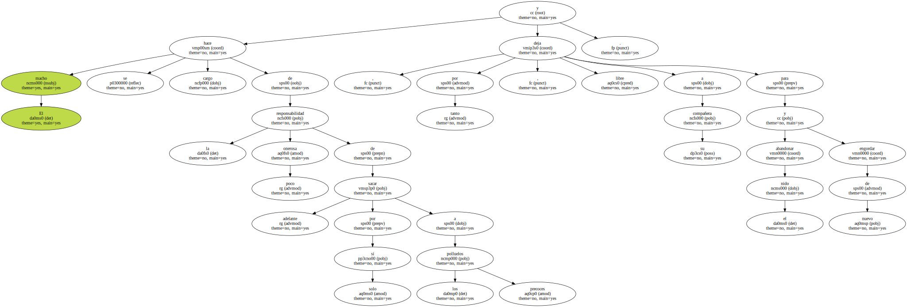
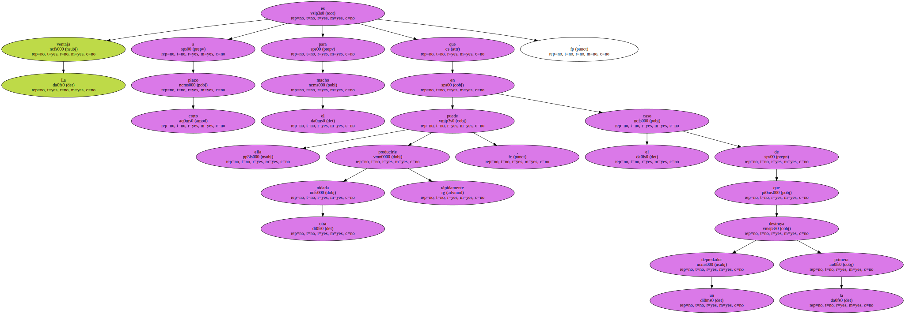
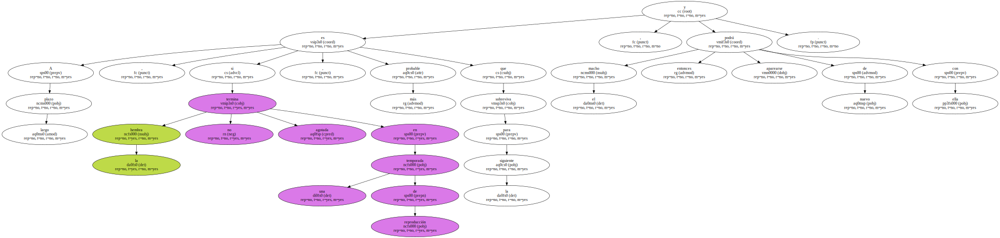
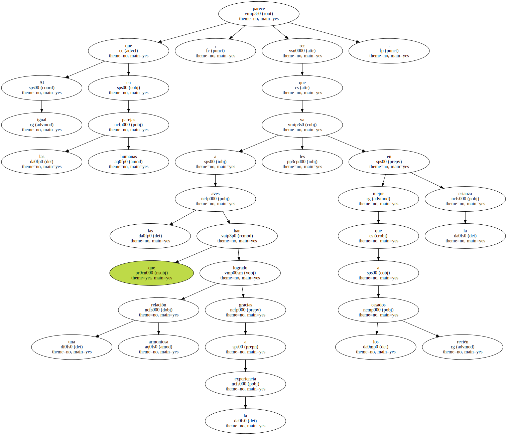
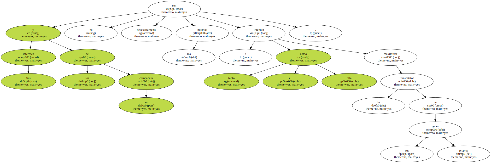
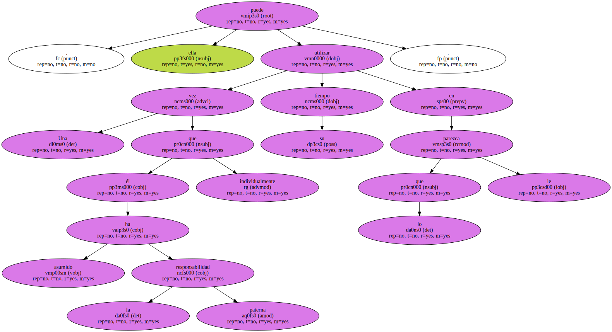
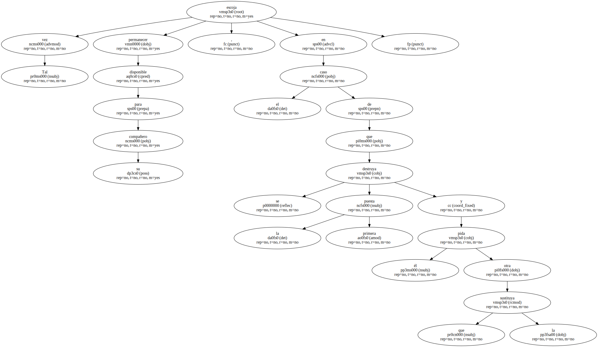
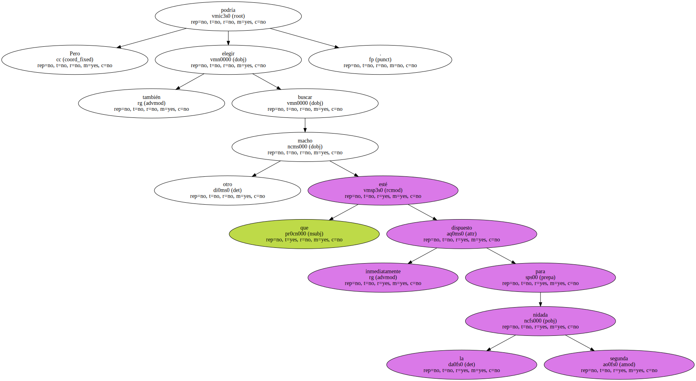
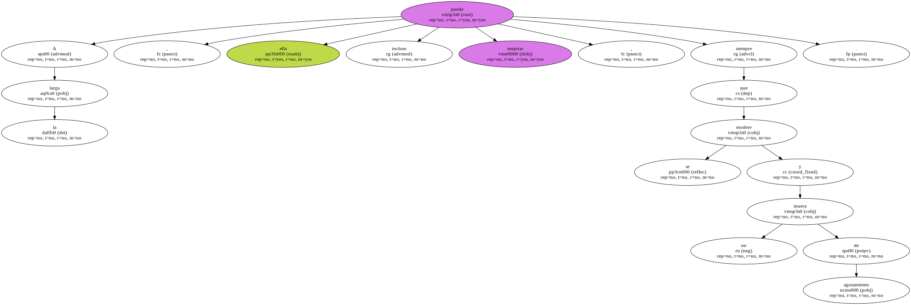

Ante estas dificultades , las aves costeras han llegado a un acuerdo.
El macho se hace cargo de la responsabilidad poco onerosa de sacar adelante por sí solo a los precoces polluelos y deja , por tanto , libre a su compañera para abandonar el nido y engordar de nuevo.
La ventaja a corto plazo para el macho es que ella puede producirle otra nidada rápidamente , en el caso de que un depredador destruya la primera.
A largo plazo , si la hembra no termina agotada en una temporada de reproducción , es más probable que sobreviva para la siguiente , y el macho podrá entonces aparearse de nuevo con ella.
Al igual que en las parejas humanas , parece ser que a las aves que han logrado una relación armoniosa gracias a la experiencia les va mejor en la crianza que a los recién casados.
Pero hay un inconveniente que repercute en la generosidad del macho.

Sus intereses y los de su compañera no son necesariamente los mismos : tanto él como ella intentan maximizar la transmisión de sus propios genes.
Una vez que él ha asumido individualmente la responsabilidad paterna , ella puede utilizar su tiempo en lo que le parezca.
Tal vez escoja permanecer disponible para su compañero , en el caso de que se destruya la primera puesta y él pida otra que la sustituya.
Pero también podría elegir buscar otro macho que esté inmediatamente dispuesto para la segunda nidada.
A la larga , ella puede incluso mejorar , siempre que se modere y no muera de agotamiento.
